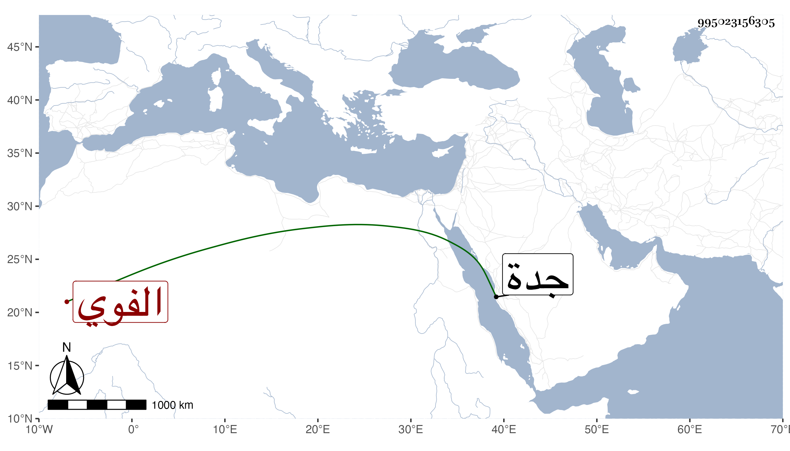

0902Sakhawi.DawLamic.ITO20230111-ara1.EIS1600.995023156305
Biography ID: 995023156305
266
عبد الرحمن بن عبد الوهاب بن نصر الله التقي بن التاج الفوي من بيت شهير . كان أحد موقعي الدست وناظر دار الضرب بل ناظر الأوقاف إلى أن انفصل عنه في ذي الحجة سنة ثلاث وأربعين بابن أقبرس ثم استقر في نظر جدة عوض تاج الدين بن حتى في التي بعدها وغيرها وفي نظر ديوان المفرد وفي غير ذلك وعمر وتعطل دهرا حتى مات في ذي القعدة سنة ست وتسعين وأظنه قارب الثمانين أو جازها عفا الله عنه .
